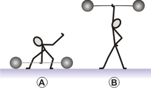

NO ME SALEN
PROBLEMAS RESUELTOS DE FÍSICA DEL CBC
(Leyes de conservación, trabajo, energía mecánica)
|
|

|
 |
2.1- El forzudo Igor levanta una pesa de
200 kg por encima de su cabeza, desde el suelo
hasta una altura de 2 m.
a- Hallar el trabajo que realiza la fuerza peso
de la misma, en el ascenso.
b- ¿La fuerza que ejerce Igor es constante? Hallar
el trabajo que realiza esta fuerza. (Sugerencia:
tener en cuenta que las velocidades inicial y
final de la pesa son nulas).
|
|
c- Calcular el trabajo que realiza Igor al mantener
a la pesa en esa posición durante 10 segundos.
d- Desde la posición anterior, hace descender
a la pesa hasta su pecho, quedando a 1,2 m sobre
el suelo. Hallar el trabajo que realiza la fuerza
peso de la misma, en el descenso.
e- ¿Qué trabajo habría realizado la fuerza peso,
si Igor hubiera levantado la pesa desde el piso
sólo hasta su pecho? Comparar con la suma
de los trabajos hallados en a y en d.
Ay... qué difícil (si todos los ejercicios de energía mecánica van a ser como éste... este tema es una papa). |
|  |
Ya sé... vos te imaginabas a Igor más corpulento y musculoso, ¿no?
OK. Comparemos los instantes A y B energéticamente. El trabajo de la fuerza peso siempre es igual a menos la variación de energía potencial gravitatoria:
WP,AB = — (EP,B — EP,A )
Simplifiquemos un poco la cosa: |
|
|
|
WP,AB = EP,A — EP,B
WP,AB = m g hA — m g hB
Si fijamos (arbitrariamente) el cero de las alturas en el piso (hA = 0), nos queda:
WP,AB = — m g hB
WP,AB = — 200 kg 10 m/s² 2 m
|
|
|
|
|
|
Es lógico que se trate de un trabajo negativo ya que el peso apunta para abajo y el desplazamiento es hacia arriba. El ángulo entre ambos vectores es 180º, y el coseno de ese ángulo vale —1. Esto fue terriblemente agotador. Pero hay que seguir. Te recuerdo la pregunta b-.
b- ¿La fuerza que ejerce Igor es constante? Hallar
el trabajo que realiza esta fuerza. (Sugerencia:
tener en cuenta que las velocidades inicial y
final de la pesa son nulas).
Esa primera pregunta es muy interesante. No sabemos si la fuerza que hace Igor es constante o no. De todos modos no interesa. Si esa fuerza fuese constante caerías en la tentación de aplicar la definición de trabajo para fuerzas constantes:
WF = F . Δx . cos α
pero no lo sabemos. De hecho, es muy improbable que lo sea: cualquiera que haya visto a un levantador de pesas se da cuenta que no lo es. Hay momentos en que el levantador hace enormes esfuerzos, momentos en que utiliza la inercia del las pesas para seguir elevándolas, en los que sus fuerzas son menores... etcétera.
Pero si admitimos que la fuerza de Igor es la única no conservativa que actúa sobre las pesas (otra dato intuitivo pero crucial), entonces utilizamos el teorema principal:
WNC = ΔEM
Dijimos: la única no conservativa es la de Igor (la de la pregunta, F), y además no hay energía cinética ni abajo ni arriba. Luego:
WF = EMB — EMA
WF = EPB — EPA
WF = m g hB — m g hA
WF = m g hB
|
|
|
|
|
|
Vamos a la c- (es una tontería):
c- Calcular el trabajo que realiza Igor al mantener
a la pesa en esa posición durante 10 segundos.
Acordate: para que exista trabajo debe haber desplazamiento. En este caso no hay desplazamiento por lo tanto el trabajo de Igor durante esos 10 segundos interminables es cero. |
|
|
|
|
|
| No se lo vayas a decir a Igor, porque lo más probable es que no te crea. El pobre ha transpirado más en esos 10 segundos que el breve intervalo del levantamiento. O, si se lo decís... recordale que trabajo -en Física- no tiene el mismo significado que trabajo en el lenguaje coloquial. |
|
|
| Bueno... ya es suficiente, así que te dejo las preguntas restantes para vos en el desafío. No hay cosas nuevas, excepto la última pregunta, cuyo resultado te imaginás, y que tiene un significado relevante. |
|
|
| |
|  |
| DESAFIO: Resolver las preguntas d- y e-. |
|
| Todos mis derechos reservados, y no los comparto con nadie, ¿entendiste?.
Se permite su reproducción citando la fuente. Última actualización dic-10. Buenos Aires, Argentina. |
|
|
|